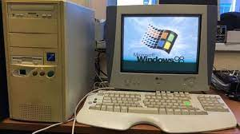

MILESTONES IN COMPUTER ARCHITECTURE
welcome!! all computer generation applications and there history are here.....
Home > all gen.
seeds of computer: (introduction)
Hundreds of different kinds of computers have been designed and built during the evolution of the modern
digital
computer. Most have been long forgotten, but a few have had a significant impact on modern ideas. In this
section we will give a brief sketch of some of the key historical developments in order to get a better un-
derstanding of how we got where we are now. Needless to say, this section only touches on the highlights and
leaves many stones unturned. Figure 1-4 lists some of the milestone machines to be discussed in this
section.
Slater (1987) is a good place to look for additional historical material on the people who founded the com-
puter age. For short biographies and beautiful color photographs by Louis Fabian
Bachrach of some of the key people who founded the computer age, see Morgan's coffee-table book (1997).
click the generation
to
go>>
The Zeroth Generation-Mechanical Computers (1642-1945)
The first person to build a working calculating machine was the French scien- tist Blaise Pascal
(1623-1662), in
whose honor the programming language Pascal is named. This device, built in 1642, when Pascal was only 19,
was
designed to help his father, a tax collector for the French government. It was entirely mechani- cal, using
gears, and powered by a hand-operated crank.
 pascal engine
pascal engine
Pascal's machine could do only addition and
read more
The First Generation-Vacuum Tubes (1945-1955)
The stimulus for the electronic computer was World War II. During the early part of the war, German
submarines
were wreaking havoc on British ships. Com- mands were sent from the German admirals in Berlin to the
submarines
by radio, which the British could, and did, intercept. The problem was that these messages were encoded
using a
device called the ENIGMA, whose forerunner was designed by amateur inventor and former U.S. president,
Thomas
Jefferson.
Early in the war, British intelligence managed to acquire an ENIGMA machine from Polish Intelligence, which
had
stolen it from the Germans. However, to break a coded message, a huge amount ot computation was needed, and
it
was needed very soon after the message was intercepted to be of any use.
read more
The Second Generation-Transistors (1955-1965)
The transistor was invented at Bell Labs in 1948 by John Bardeen, Walter Brat- tain, and William Shockley,
for
which they were awarded the 1956 Nobel Prize in physics. Within 10 years the transistor revolutionized
computers, and by the late 1950s, vacuum tube computers were obsolete.
The first transistorized computer was
built at M.I.T's Lincoln Laboratory, a 16-bit machine along the lines of the
Whirlwind I. It was
read more
The Third Generation-Integrated Circuits (1965-1980)
The invention of the silicon integrated circuit by Jack Kilby and Robert Noyce (working independently) in
1958
allowed dozens of transistors to be put on a single chip. This packaging made it possible to build computers
that were smaller, faster, and cheaper than their transistorized predecessors. Some of the more significant
Computers from this generation are described below.
By 1964 IBM was the leading computer company and had a big problem with its two highly successful
read more
The Fourth Generation-Very Large Scale Integration (1980-?)
By the 1980s, VLSI (Very Large Scale Integration) had made it possible to.

put first tens of thousands, then hundreds of thousands, and finally millions of tran- sistors on a single
chip.
This development soon led to smaller and faster com- puters. Before the PDP-1, computers were so big and
expensive that companies and universities had to have special departments called computer centers to run
them.
read more
The Fifth Generation-Low-Power and Invisible Computers(streaming now)
In 1981, the Japanese government announced that they were planning to spend $500 million to help Japanese
companies develop fifth-generation computers, which would be based on artificial intelligence and represent
a
quantum leap over dumb fourth-generation computers.
artificial intelligence
Having seen Japanese companies take over the market in
many
industries, from cameras to stereos to televisions, American and European computer makers went from 0
read more
DEVELOPER:)
hello!! I'm gunjan hirani learing of fronthand web development at gyanmanjari institude of
technology,bhavnagar,indai.i build this static
site to help people who curious about knowing generation of computers.send me message if you like this site.following is my social account contect me:)
>>waiting for your feedback.....
more:}
to get more about computer information follow my git account which i provide my developer section
see.....
© terms & conditions|| ©2021 All rights
reserved.
Made with ❤️ by me
scripted by me ⛳
powered by netlify 💎 and github 🚀
dedicated to my parents 👨👩
supported by dhaval hirani 😈
special thanks to devoza👔
thanks for visiting 😄